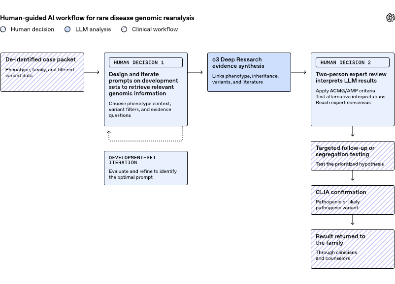

보스턴 아동병원과 오픈AI가 o3 Deep Research로 풀리지 않던 희귀질환 376건을 재분석했습니다.
전문가 검토와 임상 확인을 거쳐 18건에서 새 진단이 확정됐습니다. 추가 진단율 4.8%입니다.
AI는 단 한 명도 진단하지 않았습니다. 근거가 붙은 가설만 제시했고, 판단은 사람이 했습니다.
AI가 의사를 대체한다고 들으셨습니까?
이 연구에서 AI는 단 한 명도 진단하지 않았습니다. 사람이 검증할 단서만 꺼냈습니다.
희귀질환 환자의 절반은 유전체 검사를 다 받고도 진단을 받지 못합니다. 데이터에 단서가 있어도 수백만 개의 변이와 흩어진 기록 속에서 찾기가 어렵습니다.
이 연구는 그 막힌 사건들을 다시 열었습니다. 그런데 AI를 진단자로 쓰지 않았습니다. 기존 분석 위에 얹는 '설명을 먼저 내놓는 추론 계층'으로 썼습니다. AI 도입을 고민하는 리더라면, 이 역할 분담이 핵심입니다.
희귀질환 재분석은 과학 문제이자 유지보수 문제입니다. 환자의 유전체는 그대로지만, 주변 지식은 계속 바뀝니다.
새 유전자가 질병에 연결되고, 검사실은 옛 변이를 재분류합니다. 그래서 결론이 나지 않았던 옛 사건도 다시 볼 가치가 생깁니다.
많은 기관이 다시 봐야 할 유전체 적체를 떠안지만, 사람 손으로 전부 보기는 어렵습니다.
첫째, AI는 결정하지 않았습니다. 사람의 탐색을 넓히고 좁혔습니다. 이것이 리더가 가장 먼저 가져갈 교훈입니다. 모델은 기존 유전체 파이프라인 위에 얹는 '설명 계층'이었습니다. 순위 하나를 돌려주는 대신, 임상 특징·유전 양상·변이 근거·문헌을 사람이 따져 물을 수 있는 정당화로 엮었습니다. 그 출력은 곧바로 진단이 되지 않았습니다.
연구진은 임상 검사실이 쓰는 ACMG/AMP 기준으로 모델의 후보를 검토했습니다. 후보마다 최소 두 명이 검토했고, 이견은 합의로 풀었습니다. 변이가 병원성으로 분류되고, CLIA 인증 검사실이 확인하고, 결과가 가족에게 전달된 뒤에야 진단으로 인정됐습니다.
둘째, 추가 진단율 4.8%는 작아 보이지만 의미가 큽니다. 376건은 새 사건이 아니었습니다. 이미 여러 상업·기관 파이프라인을 거치고 다학제 팀이 논의한, 가장 어려운 사건들이었습니다. 그 위에서 18건의 새 진단이 나왔습니다.
| 질환군 (코호트) | 사건 수 | 진단 단서 | 진단율 |
|---|---|---|---|
| 신경발달 질환 | 100 | 10 | 10.0% |
| 신경근육 질환 | 61 | 4 | 6.6% |
| 소아 돌연사 | 200 | 2 | 1.0% |
| 조기 정신증 | 15 | 2 | 13.3% |
| 합계 | 376 | 18 | 4.8% |
조기 정신증 코호트는 표본이 작아 신뢰구간이 넓습니다. 진단율은 각 질환군이 단일 유전자 설명을 가질 가능성과도 관련됩니다. 18건 중 7건은 '재발견'이었습니다. 외부에서 진단됐으나 연구진이 본 기록에는 빠져 있던 사례입니다. 출처: OpenAI (2026, June), NEJM AI.
셋째, 모델은 입력에 없던 변이까지 추론했습니다. 한 조기 정신증 사례에서 모델은 22번 염색체의 저품질 신호와 아이의 심장·면역·신경발달·정신과 증상을 연결했습니다. 그리고 디조지 증후군과 관련된 22q11.2 결실을 가설로 세웠습니다. 이 변이는 추가 유전체 검사로 확인됐습니다.
단일 유전자 원인을 물었는데도, 복합 증상을 더 잘 설명하는 두 유전자를 함께 제시한 경우도 있었습니다. LAMA2와 FOXP1이 근육·신경발달 증상을 함께 설명한 사례가 있었습니다. 또 다른 사례는 TTN과 SRPK3의 이중유전자 설명을 새로 찾았습니다. 백반증(vitiligo)에서는 S1PR1의 11개 아미노산 결실이라는, 검증이 필요한 새 기전 가설도 내놨습니다.
넷째, 자기보고 신뢰도 점수가 사람의 주의를 배분하는 데 쓰였습니다. 이미 풀린 사건들에서 점수를 검증했습니다. 일관되게 맞힌 경우는 평균 최저 85.6점, 틀리거나 모른 경우는 42.1점이었습니다. 보정된 확률은 아니었습니다. 그래서 증거나 임상 판정의 대체물로는 쓰지 않았습니다. 다만 검토자가 어떤 후보부터 볼지 정하는 데 도움이 됐습니다.
| 검증 세트 (이미 풀린 사건) | 결과 |
|---|---|
| 다양한 희귀질환 세트 | 51건 중 48건에서 정확한 유전자·변이 복원 |
| 신경근육 질환 세트 | 57건 중 45건에서 정확한 진단 반환 |
| 롱리드 유전체 세트 | 15건 전부 정확한 유전자, 12건은 두 원인 대립유전자까지 |
본 분석 전, 이미 진단이 확정된 사건으로 워크플로우를 다듬은 결과입니다. 이 단계가 프롬프트 개발을 도왔고, 전문가 검토가 여전히 필요한 지점을 보여줬습니다. 출처: OpenAI (2026, June), NEJM AI.
접었던 분석, 미궁에 빠진 고객 이슈, 결론이 안 났던 데이터. 이 연구의 전제는 '데이터는 그대로지만 지식과 도구는 좋아진다'입니다. 옛 데이터 중 지금이면 다시 풀릴 후보를 한 줄씩 적습니다. 이것이 재분석 대상 목록입니다. (이번 주)
이 워크플로우의 핵심은 순위 하나가 아니라 따져 물을 수 있는 정당화를 요구한 점입니다. 우리 팀의 AI 사용 프롬프트에 "결론과 함께 근거·반례·확신도를 같이 제시하라"를 한 줄 넣습니다. 사람이 검토할 수 있는 형태로 출력이 바뀝니다. (1주일)
이 연구에서 AI 출력은 '최소 2인 검토 → 기준 분류 → 외부 확인 → 전달' 게이트를 통과해야만 진단이 됐습니다. 우리 업무에도 'AI가 만든 것이 외부로 나가기 전 누가, 무엇으로 확인하는가'를 한 장으로 정의합니다. 책임 소재가 분명해집니다. (1개월)
이 연구는 진단 도구 사용을 권하지 않습니다. 연구진은 환자·임상의·고객이 오픈AI 모델로 질병을 진단하거나 의료 결정을 내리라는 뜻이 아니라고 못 박았습니다. 모델은 단 한 명도 진단하지 않았습니다. 모든 진단은 자격 있는 임상 전문가가 했습니다.
후향적 연구이고, 한계가 분명합니다. 코호트는 이질적이었고, 검토자는 모델 신뢰도를 모르는 상태가 아니었습니다(비맹검). 연구진은 절감된 시간, 비용, 임상의 노력, 오탐 부담, 진료 변화는 측정하지 않았습니다. 구조 변이·반복 확장 같은 다른 유전 변이도 체계적으로 평가하지 않았습니다.
거대 언어모델은 그럴듯한 오답을 만듭니다. 맥락을 잘못 읽거나, 자세히 보면 무너지는 설명을 내놓을 수 있습니다. 그래서 모든 결과가 사람의 판정과 임상 확인을 거쳤습니다. 모델은 탐색을 넓혔을 뿐, 가족에게 무엇을 돌려줄지 결정하지 않았습니다. 임상 확대 적용에는 프라이버시·보안·감사 가능성·현지 규제가 똑같이 요구됩니다.
AI를 잘 쓰는 조직은 AI에게 결정을 맡기지 않습니다. 사람이 검증할 단서를 넓히게 하고, 판단은 사람이 합니다.
o3 Deep Research: 오픈AI의 추론 모델 계열로, 여러 단계의 추론과 자료 종합을 수행합니다. 이 연구에서는 임상 특징·변이·문헌을 엮어 근거가 붙은 가설을 내놓는 역할을 했습니다.
유전체 재분석 (Reanalysis): 과거에 결론이 나지 않은 유전체 데이터를, 새로 쌓인 지식으로 다시 해석하는 일입니다. 환자의 유전체는 그대로지만 주변 지식이 바뀌기 때문에 가능합니다.
ACMG/AMP 기준: 임상 검사실이 유전 변이를 병원성·양성 등으로 분류할 때 쓰는 표준 평가 틀입니다. 모델의 후보도 이 기준으로 검토됐습니다.
CLIA 인증 검사실: 미국에서 임상 검사 품질을 보장하는 인증을 받은 검사실입니다. 변이가 진단으로 인정되려면 이곳의 확인을 거쳐야 했습니다.
22q11.2 결실 / 디조지 증후군: 22번 염색체 일부가 빠져 생기는 질환으로, 심장·면역·신경발달 증상을 동반합니다. 모델이 입력에 없던 이 구조 변이를 추론해 화제가 됐습니다.
휴먼 인 더 루프 (Human-in-the-loop): AI 출력을 사람이 검토·확정하는 과정을 작업 흐름 안에 넣는 방식입니다. 이 연구의 안전성은 여기에 묶여 있습니다.